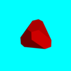

MKI Search Game
Find and collect jewels randomly scattered in 3D stages.
- Touch or click on the screen sectors to navigate.
- The middle sector is for alignment (first vertical, then horizontal).
- You can go through the walls like a ghost.
- When you collect all 10 jewels you will be transferred to next random stage.
- Hint: You can escape to another stage by clicking/tapping the middle sector few times.
- Hint: Play in landscape sreen orientation.

LOAD AND START THE GAME